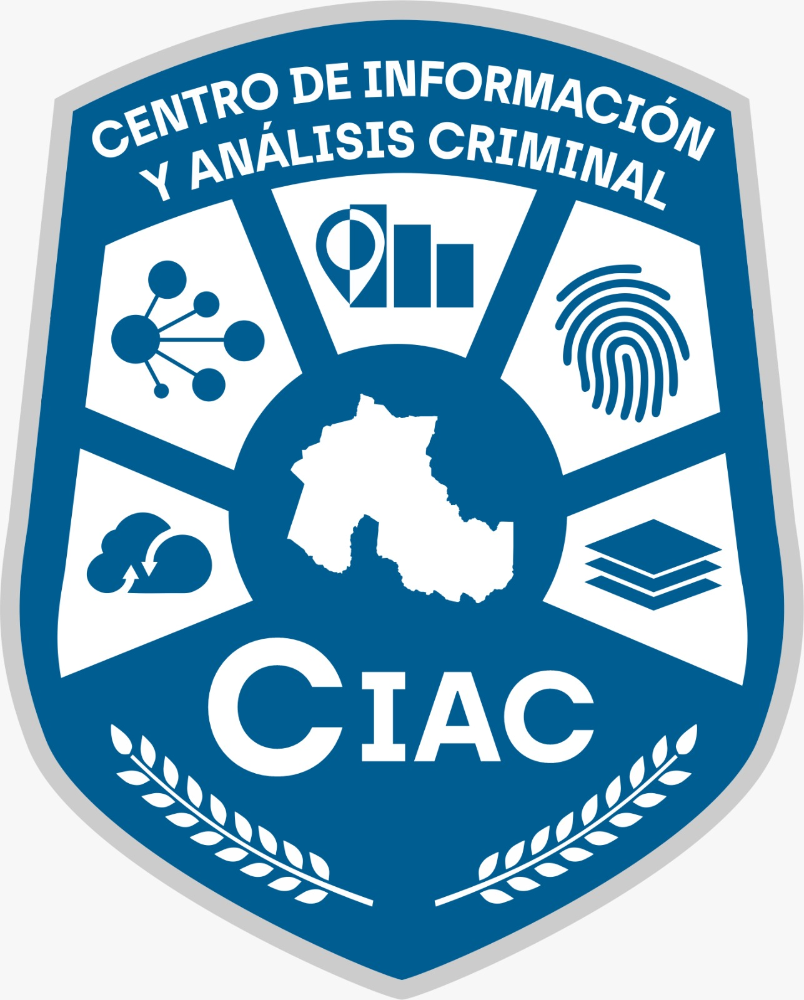

CIAC
Centro de Información y Análisis Criminal
Sistema de Partes Diarios (SIP-Comisarías)
Conectado
Interfaz de registro de partes diarios
Gestión Unificada
Sistema digital para el registro de partes policiales, novedades y gestión de detenidos en todas las comisarías de la provincia.
Registro de Personal
- Asignación de servicios
- Control de horarios
- Historial de actuaciones
Gestión de Detenidos
- Registro de ingresos
- Control de tiempos
- Comunicación con fiscalías
Partes Policiales
- Hechos delictivos
- Accidentes de tránsito
- Actuaciones destacadas
Estadísticas Operativas
142
Comisarías conectadas
3,245
Partes diarios promedio
98.5%
Digitalización completa
Aplicación Móvil
Registro en tiempo real
Firma digital incorporada
Fotos y evidencias georreferenciadas
Funcionalidad offline
Disponible para dispositivos móviles:
Integraciones
El SIP-Comisarías se integra automáticamente con:
- SIFCOP (Pedidos de Captura)
- SIBIOS (Identificación Biométrica)
- SNIC (Estadísticas Criminales)
- Sistema de Turnos Fiscales